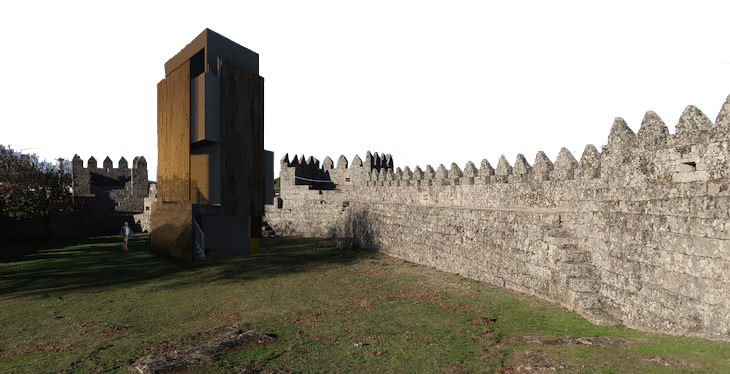
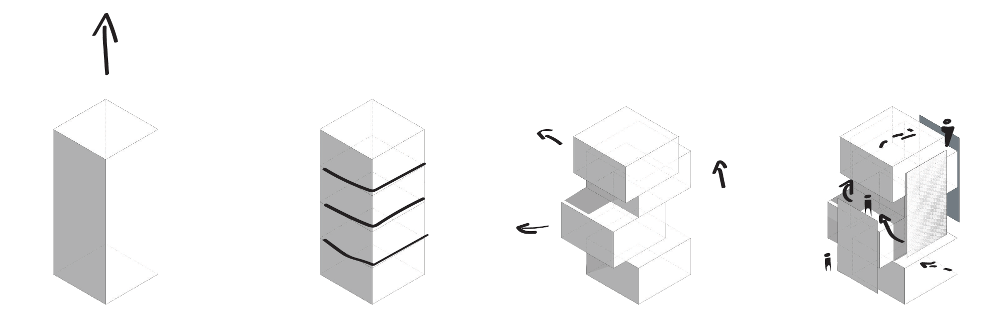
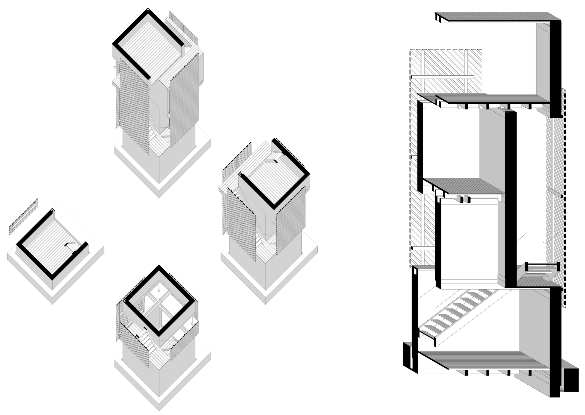
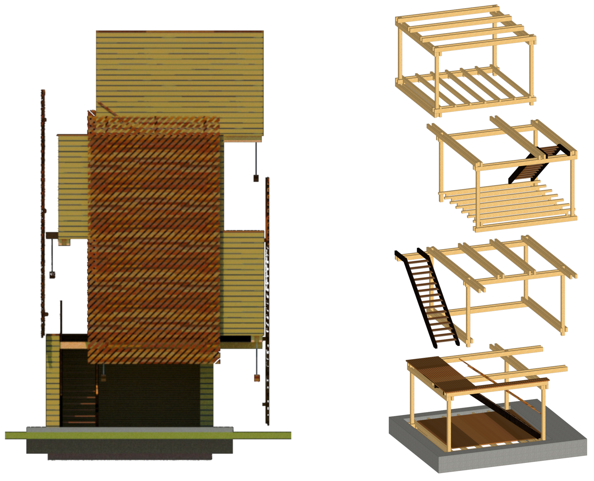
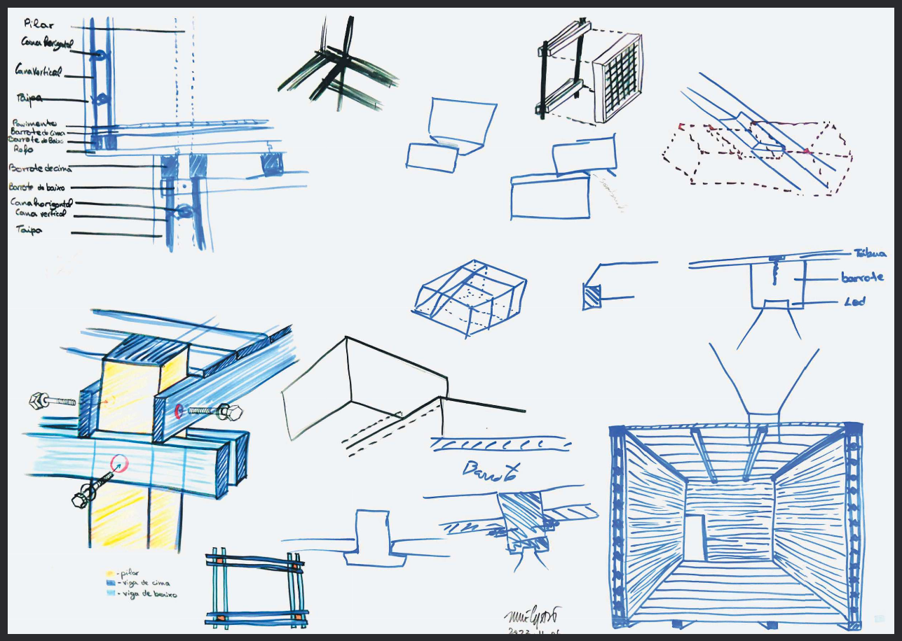
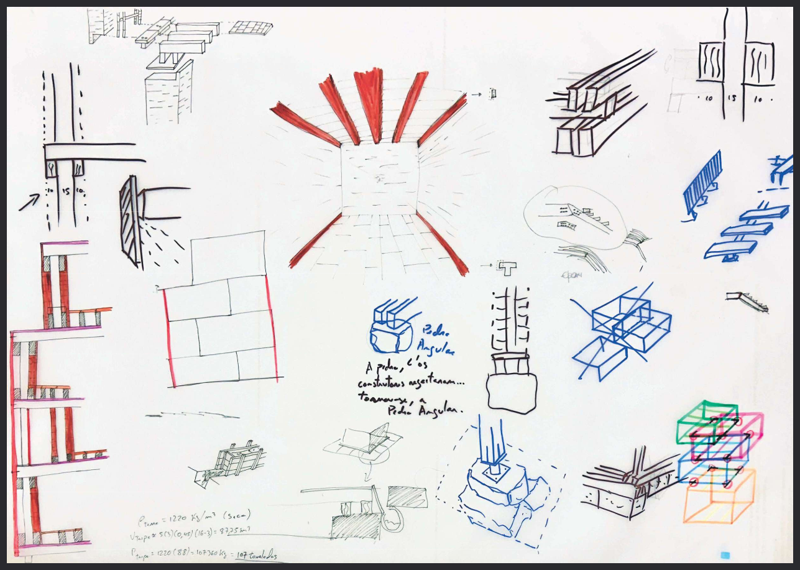
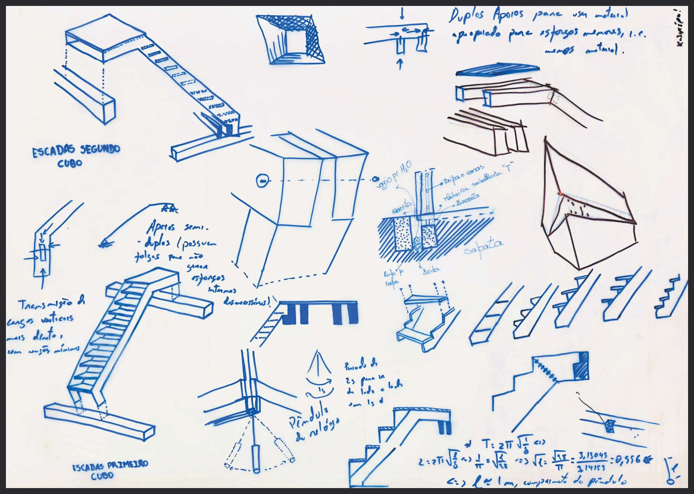

bla

From a sterile tower, we aplyed cuts and slided the new volums, adding planes for pricavy/intimacy.
As a first approach to a town not yet well known, a tower made out of wood, dirt and straw would be implemented inside the elliptical castle of Trancoso as a view point. Base structure for an 4 stage tower made with natural materials, such as dirt, straw and wood, as an artistic meet point inside the castle of Trancoso, Portugal. Part of Trancoso's call to Design.

Intended to be built out of adobe or rammed earth, this tower structure was intended to be as versatile as possible to allow the best construction technique for the environment.

The colors match the surronding buildings, yet its form diverges completely.



Some drawing from development process